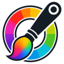

Pin Chromapicker to your toolbar
Click the
puzzle piece
in the top-right of your browser, then toggle the pin next to Chromapicker.

Chromapicker
Welcome - let's
pin
Chromapicker to your toolbar
Pinning makes the color picker one click away from every web page. Takes five seconds.
Quick setup
1
Find the extensions menu
Click the puzzle piece
icon in the top-right of your browser.
2
Find Chromapicker in the list
Look for
Chromapicker - Color Picker & Mixer
among your installed extensions.
3
Click the pin icon
Toggle the small pushpin icon so it turns accent-colored. That's it - Chromapicker now lives in your toolbar.
Chromapicker
→
Click to pin
Pick
any pixel - or press
Alt+P
Extract
every color from a page or image
Mix
blend in RGB / HSL / OKLCH
Harmony
generate triadic, analogous, etc.
Built by
mthcht
·
source
·
report an issue